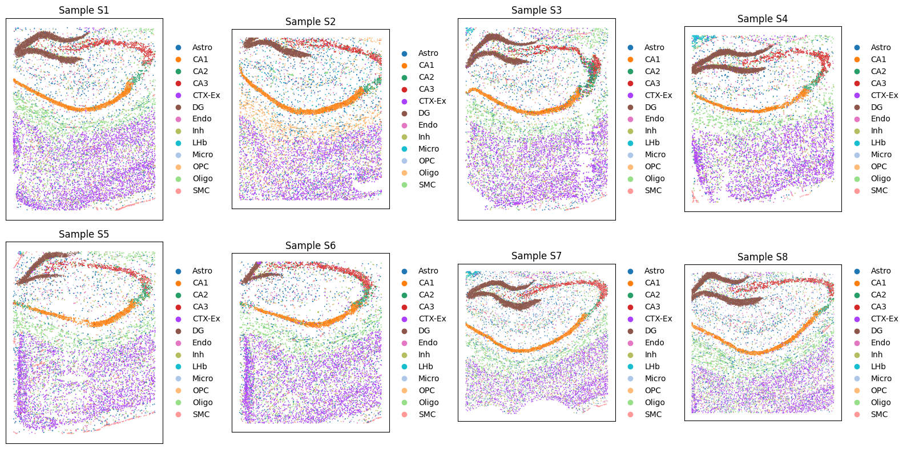
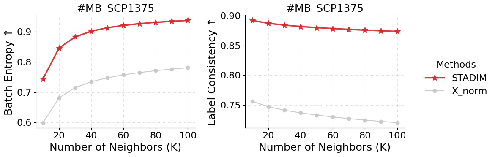
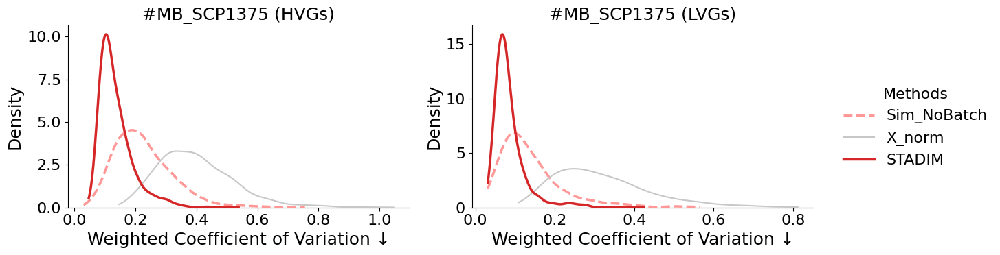
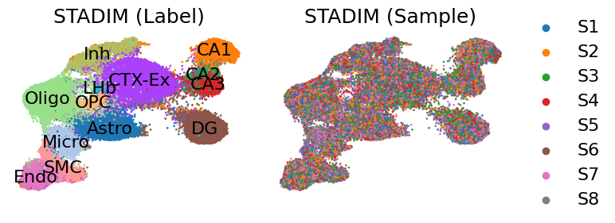
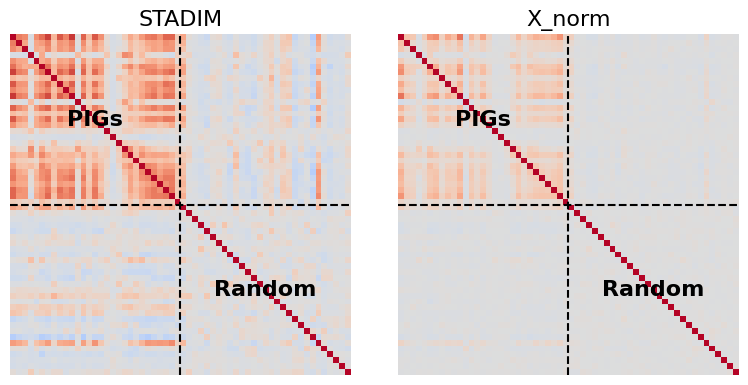

Tutorial 5: Corss-disease states denoising and integration of STARmap PLUS datasets for AD
Quick view data
[1]:
import scanpy as sc
import matplotlib.pyplot as plt
import os
sample_ids = [f'S{i}' for i in range(1, 9)]
data_dir = '/data2/xiaost/SODA/Data/MB_SCP1375/'
fig, axes = plt.subplots(2, 4, figsize=(16, 8))
axes = axes.flatten()
for i, s_id in enumerate(sample_ids):
adata = sc.read_h5ad(os.path.join(data_dir, f'{s_id}.h5ad'))
print(f'{s_id}')
print(adata)
sc.pl.spatial(adata, color='top_level_cell_type', ax=axes[i], show=False, title=f'Sample {s_id}', spot_size=150)
axes[i].set_xlabel('')
axes[i].set_ylabel('')
plt.tight_layout()
plt.show()
/home/xiaost/anaconda3/envs/stadim/lib/python3.9/site-packages/louvain/__init__.py:54: UserWarning: pkg_resources is deprecated as an API. See https://setuptools.pypa.io/en/latest/pkg_resources.html. The pkg_resources package is slated for removal as early as 2025-11-30. Refrain from using this package or pin to Setuptools<81.
from pkg_resources import get_distribution, DistributionNotFound
S1
AnnData object with n_obs × n_vars = 9803 × 2766
obs: 'biosample_id', 'donor_id', 'species', 'species__ontology_label', 'sex', 'disease', 'disease__ontology_label', 'organ', 'organ__ontology_label', 'library_preparation_protocol', 'library_preparation_protocol__ontology_label', 'orig_index', 'batch', 'time', 'group', 'replicate', 'label', 'region', 'region_merged', 'top_level_cell_type', 'sub_level_cell_type', 'sample'
obsm: 'spatial'
S2
AnnData object with n_obs × n_vars = 8506 × 2766
obs: 'biosample_id', 'donor_id', 'species', 'species__ontology_label', 'sex', 'disease', 'disease__ontology_label', 'organ', 'organ__ontology_label', 'library_preparation_protocol', 'library_preparation_protocol__ontology_label', 'orig_index', 'batch', 'time', 'group', 'replicate', 'label', 'region', 'region_merged', 'top_level_cell_type', 'sub_level_cell_type', 'sample'
obsm: 'spatial'
S3
AnnData object with n_obs × n_vars = 9428 × 2766
obs: 'biosample_id', 'donor_id', 'species', 'species__ontology_label', 'sex', 'disease', 'disease__ontology_label', 'organ', 'organ__ontology_label', 'library_preparation_protocol', 'library_preparation_protocol__ontology_label', 'orig_index', 'batch', 'time', 'group', 'replicate', 'label', 'region', 'region_merged', 'top_level_cell_type', 'sub_level_cell_type', 'sample'
obsm: 'spatial'
S4
AnnData object with n_obs × n_vars = 8034 × 2766
obs: 'biosample_id', 'donor_id', 'species', 'species__ontology_label', 'sex', 'disease', 'disease__ontology_label', 'organ', 'organ__ontology_label', 'library_preparation_protocol', 'library_preparation_protocol__ontology_label', 'orig_index', 'batch', 'time', 'group', 'replicate', 'label', 'region', 'region_merged', 'top_level_cell_type', 'sub_level_cell_type', 'sample'
obsm: 'spatial'
S5
AnnData object with n_obs × n_vars = 8202 × 2766
obs: 'biosample_id', 'donor_id', 'species', 'species__ontology_label', 'sex', 'disease', 'disease__ontology_label', 'organ', 'organ__ontology_label', 'library_preparation_protocol', 'library_preparation_protocol__ontology_label', 'orig_index', 'batch', 'time', 'group', 'replicate', 'label', 'region', 'region_merged', 'top_level_cell_type', 'sub_level_cell_type', 'sample'
obsm: 'spatial'
S6
AnnData object with n_obs × n_vars = 8186 × 2766
obs: 'biosample_id', 'donor_id', 'species', 'species__ontology_label', 'sex', 'disease', 'disease__ontology_label', 'organ', 'organ__ontology_label', 'library_preparation_protocol', 'library_preparation_protocol__ontology_label', 'orig_index', 'batch', 'time', 'group', 'replicate', 'label', 'region', 'region_merged', 'top_level_cell_type', 'sub_level_cell_type', 'sample'
obsm: 'spatial'
S7
AnnData object with n_obs × n_vars = 9634 × 2766
obs: 'biosample_id', 'donor_id', 'species', 'species__ontology_label', 'sex', 'disease', 'disease__ontology_label', 'organ', 'organ__ontology_label', 'library_preparation_protocol', 'library_preparation_protocol__ontology_label', 'orig_index', 'batch', 'time', 'group', 'replicate', 'label', 'region', 'region_merged', 'top_level_cell_type', 'sub_level_cell_type', 'sample'
obsm: 'spatial'
S8
AnnData object with n_obs × n_vars = 10372 × 2766
obs: 'biosample_id', 'donor_id', 'species', 'species__ontology_label', 'sex', 'disease', 'disease__ontology_label', 'organ', 'organ__ontology_label', 'library_preparation_protocol', 'library_preparation_protocol__ontology_label', 'orig_index', 'batch', 'time', 'group', 'replicate', 'label', 'region', 'region_merged', 'top_level_cell_type', 'sub_level_cell_type', 'sample'
obsm: 'spatial'

Run STADIM
Note: For the high-resolution dataset, we added filtering criteria to the cells and selected more candidate neighbors during the triplet construction phase.
You can call the STADIM command directly in your terminal:
nohup stadim --input "./S"{1,2,3,4,5,6,7,8}".h5ad" --save_preprocessed_h5ad None --save_dir ./MB_SCP1375_test --device "cuda:0" --monitor --seed 2026 --min_genes 10 --min_cells 10 --knn_c 30 --knn_e 70 --mnn_n 100 > ./MB_SCP1375_test.log 2>&1 &
and load the results into your Python environment for downstream analysis. The denoised expression matrix is conveniently stored within the layers attribute:
import anndata as ad
adata = ad.read_h5ad('/MB_SCP1375_test/sdata.h5ad')
## The denoised gene expressionis is stored in adata.layers['STADIM']
print(adata)
or you can call STADIM within a Jupyter Notebook as follows:
[2]:
import stadim
adata = stadim.run_STADIM(['/data2/xiaost/SODA/Data/MB_SCP1375/S1.h5ad', '/data2/xiaost/SODA/Data/MB_SCP1375/S2.h5ad',
'/data2/xiaost/SODA/Data/MB_SCP1375/S3.h5ad', '/data2/xiaost/SODA/Data/MB_SCP1375/S4.h5ad',
'/data2/xiaost/SODA/Data/MB_SCP1375/S5.h5ad', '/data2/xiaost/SODA/Data/MB_SCP1375/S6.h5ad',
'/data2/xiaost/SODA/Data/MB_SCP1375/S7.h5ad', '/data2/xiaost/SODA/Data/MB_SCP1375/S8.h5ad'],
save_preprocessed_h5ad=None, save_dir=None,
sample_names=None, batch_key='sample', device='cuda:5', seed=2026,
min_genes=10, min_cells=10, nhvgs=2000, dim=50, knn_c=30, knn_e=70, mnn_n=100,
batch_size=256, triplets_update_ratio=0.8, hard_triplets_ratio=0.7,
epochs=100, lr=1e-3, loss_mode='nb', beta_trip=0.1,
encoder_layers=[512, 256, 64], decoder_layers=[1000])
Results will be stored in adata.layers['STADIM']
=== 1. Begin read_data!
Detected multi-slice data, total 8 slices
Slice 1: Using user-defined column 'sample' as sample
Slice 1: Keeping existing sample label S1
Warning: Slice S1 has no valid uns['spatial'] info
Slice 2: Using user-defined column 'sample' as sample
Slice 2: Keeping existing sample label S2
Warning: Slice S2 has no valid uns['spatial'] info
Slice 3: Using user-defined column 'sample' as sample
Slice 3: Keeping existing sample label S3
Warning: Slice S3 has no valid uns['spatial'] info
Slice 4: Using user-defined column 'sample' as sample
Slice 4: Keeping existing sample label S4
Warning: Slice S4 has no valid uns['spatial'] info
Slice 5: Using user-defined column 'sample' as sample
Slice 5: Keeping existing sample label S5
Warning: Slice S5 has no valid uns['spatial'] info
Slice 6: Using user-defined column 'sample' as sample
Slice 6: Keeping existing sample label S6
Warning: Slice S6 has no valid uns['spatial'] info
Slice 7: Using user-defined column 'sample' as sample
Slice 7: Keeping existing sample label S7
Warning: Slice S7 has no valid uns['spatial'] info
Slice 8: Using user-defined column 'sample' as sample
Slice 8: Keeping existing sample label S8
Warning: Slice S8 has no valid uns['spatial'] info
Merging data...
Raw Merged Data: 72165 spots × 2766 genes
Unified Filtering (min_genes=10, min_cells=10)...
→ After Filtering: 72165 spots × 2766 genes
✓ Complete: Samples included: ['S1', 'S2', 'S3', 'S4', 'S5', 'S6', 'S7', 'S8']
✓ Complete: AnnData object with n_obs × n_vars = 72165 × 2766
obs: 'biosample_id', 'donor_id', 'species', 'species__ontology_label', 'sex', 'disease', 'disease__ontology_label', 'organ', 'organ__ontology_label', 'library_preparation_protocol', 'library_preparation_protocol__ontology_label', 'orig_index', 'batch', 'time', 'group', 'replicate', 'label', 'region', 'region_merged', 'top_level_cell_type', 'sub_level_cell_type', 'sample', 'n_genes'
var: 'n_cells'
obsm: 'spatial'
layers: 'X_raw'
=== 2. Begin MY_preprocess!
== Selected 2000 HVGs across 8 slices
=== 3. Begin all_ap find neighbors!
=== 4. Begin pre_dataset!
{0: 'S1', 1: 'S2', 2: 'S3', 3: 'S4', 4: 'S5', 5: 'S6', 6: 'S7', 7: 'S8'}
Preparing triplet: 100%|██████████| 72165/72165 [00:17<00:00, 4045.07it/s]
=== 5. Begin IterableTripletDataset!
Initializing triplets...
IterableTripletDataset Initialized: 72165 anchors, batch_size=256
=== 6. Begin calculate_recommended_margin!
Calculating recommended margin (averaging over 5 runs)...
========================================
Margins from 5 runs: [4.0721, 4.0501, 4.0252, 3.9645, 3.9303]
Final Recommended Margin: 4.0084
=== 7. Starting training...
Begin training: device=cuda:5
Training: 100%|██████████| 100/100 [14:33<00:00, 8.73s/it, recon=0.175, triplet=0.351, total=0.210]
=== 8. Generating denoised expression...
Data size (2.00e+08) is within limits. Allocating memory for denoised data.
All processes finished! Total time: 22.07 mins.
[3]:
print(adata)
AnnData object with n_obs × n_vars = 72165 × 2766
obs: 'biosample_id', 'donor_id', 'species', 'species__ontology_label', 'sex', 'disease', 'disease__ontology_label', 'organ', 'organ__ontology_label', 'library_preparation_protocol', 'library_preparation_protocol__ontology_label', 'orig_index', 'batch', 'time', 'group', 'replicate', 'label', 'region', 'region_merged', 'top_level_cell_type', 'sub_level_cell_type', 'sample', 'n_genes', 'n_genes_by_counts', 'log1p_n_genes_by_counts', 'total_counts', 'log1p_total_counts', 'size_factor'
var: 'n_cells', 'n_cells_by_counts', 'mean_counts', 'log1p_mean_counts', 'pct_dropout_by_counts', 'total_counts', 'log1p_total_counts', 'highly_variable'
uns: 'log1p', 'top_hvgs'
obsm: 'spatial', 'S_scale', 'X_hvg_scale', 'X_pca', 'cell_names', 'STADIM'
layers: 'X_raw', 'X_norm', 'X_log', 'STADIM', 'STADIM_withbatch'
Analysis
[4]:
import anndata as ad
import pandas as pd
import scanpy as sc
import numpy as np
import os
import warnings
warnings.filterwarnings('ignore')
import seaborn as sns
import matplotlib.pyplot as plt
from matplotlib.lines import Line2D
import matplotlib.patches as mpatches
plt.rcParams.update({
'font.size': 16,
'axes.labelsize': 18,
'axes.titlesize': 18,
'xtick.labelsize': 16,
'ytick.labelsize': 16,
'legend.fontsize': 16,
})
styles = {
'STADIM': {'color': '#d62728', 'marker': '*', 'ms': 10, 'lw': 2.5, 'zorder': 10},
'X_norm': {'color': '#c7c7c7', 'marker': 'o', 'ms': 6, 'lw': 1.5, 'zorder': 5}
}
Batch Entropy
[5]:
%%time
res = stadim.calculate_batch_entropy(adata, test_layers=['X_norm', 'STADIM'], k_range=[10, 20, 30, 40, 50, 60, 70, 80, 90, 100],
group_key='top_level_cell_type', donor_id='MB_SCP1375', batch_key='sample', n_hvg=2000)
batch_entropy = pd.DataFrame(res)
display(batch_entropy)
| Method | Donor_ID | K | Avg_Entropy | Avg_Region_Ratio | |
|---|---|---|---|---|---|
| 0 | X_norm | MB_SCP1375 | 10 | 0.599390 | 0.756310 |
| 1 | X_norm | MB_SCP1375 | 20 | 0.681480 | 0.747287 |
| 2 | X_norm | MB_SCP1375 | 30 | 0.715242 | 0.741435 |
| 3 | X_norm | MB_SCP1375 | 40 | 0.734649 | 0.736935 |
| 4 | X_norm | MB_SCP1375 | 50 | 0.747662 | 0.733296 |
| 5 | X_norm | MB_SCP1375 | 60 | 0.757433 | 0.730088 |
| 6 | X_norm | MB_SCP1375 | 70 | 0.764947 | 0.727324 |
| 7 | X_norm | MB_SCP1375 | 80 | 0.771243 | 0.724833 |
| 8 | X_norm | MB_SCP1375 | 90 | 0.776517 | 0.722585 |
| 9 | X_norm | MB_SCP1375 | 100 | 0.781012 | 0.720530 |
| 10 | STADIM | MB_SCP1375 | 10 | 0.744407 | 0.892131 |
| 11 | STADIM | MB_SCP1375 | 20 | 0.846148 | 0.887282 |
| 12 | STADIM | MB_SCP1375 | 30 | 0.882931 | 0.884265 |
| 13 | STADIM | MB_SCP1375 | 40 | 0.901661 | 0.881914 |
| 14 | STADIM | MB_SCP1375 | 50 | 0.913067 | 0.880034 |
| 15 | STADIM | MB_SCP1375 | 60 | 0.920889 | 0.878479 |
| 16 | STADIM | MB_SCP1375 | 70 | 0.926654 | 0.877071 |
| 17 | STADIM | MB_SCP1375 | 80 | 0.931002 | 0.875830 |
| 18 | STADIM | MB_SCP1375 | 90 | 0.934447 | 0.874692 |
| 19 | STADIM | MB_SCP1375 | 100 | 0.937294 | 0.873666 |
CPU times: user 21min 28s, sys: 31.1 s, total: 21min 59s
Wall time: 5min 30s
[6]:
metrics = ['Avg_Entropy', 'Avg_Region_Ratio']
y_labels = ['Batch Entropy \u2191', 'Label Consistency \u2191']
plot_data = batch_entropy.groupby(['Method', 'K'])[metrics].mean().reset_index()
fig, axes = plt.subplots(1, 2, figsize=(10, 4), sharex=True)
for i, metric in enumerate(metrics):
ax = axes[i]
for m in ['STADIM','X_norm']:
data = plot_data[plot_data['Method'] == m].sort_values('K')
if data.empty: continue
ax.plot(data['K'], data[metric], label=m,
color=styles[m]['color'], marker=styles[m]['marker'],
markersize=styles[m]['ms'], linewidth=styles[m]['lw'],
zorder=styles[m]['zorder'], alpha=0.9)
ax.set_title(f"#MB_SCP1375")
ax.set_xlabel('Number of Neighbors (K)')
ax.set_ylabel(y_labels[i])
ax.set_xticks([20, 40, 60, 80, 100])
ax.grid(True, linestyle=':', alpha=0.5)
sns.despine(ax=ax)
handles, labels = axes[0].get_legend_handles_labels()
fig.legend(handles, labels, loc='center left', bbox_to_anchor=(1.0, 0.5),
title='Methods', frameon=False)
plt.tight_layout()
plt.show()

weighted Coefficient of Variation (wCV)
[7]:
benchmark_adata = stadim.create_shuffled_batches(adata, n_batches=5)
benchmark_adata.var = adata.var
print(f"\nbenchmark adata: {benchmark_adata}")
benchmark adata: AnnData object with n_obs × n_vars = 72165 × 2766
obs: 'biosample_id', 'donor_id', 'species', 'species__ontology_label', 'sex', 'disease', 'disease__ontology_label', 'organ', 'organ__ontology_label', 'library_preparation_protocol', 'library_preparation_protocol__ontology_label', 'orig_index', 'batch', 'time', 'group', 'replicate', 'label', 'region', 'region_merged', 'top_level_cell_type', 'sub_level_cell_type', 'sample', 'n_genes', 'n_genes_by_counts', 'log1p_n_genes_by_counts', 'total_counts', 'log1p_total_counts', 'size_factor', 'sim_batch'
var: 'n_cells', 'n_cells_by_counts', 'mean_counts', 'log1p_mean_counts', 'pct_dropout_by_counts', 'total_counts', 'log1p_total_counts', 'highly_variable'
obsm: 'spatial', 'S_scale', 'X_hvg_scale', 'X_pca', 'STADIM'
layers: 'X_raw', 'X_norm', 'X_log', 'STADIM', 'STADIM_withbatch'
[8]:
%%time
wcv = {}
for gene_type in ["HVGs", "LVGs"]:
print(f"\ngene_type: {gene_type}")
# wCV before and after STADIM
res_deno = stadim.calculate_cv(adata, batch_key='sample', label_key='top_level_cell_type', methods=['X_norm', 'STADIM'], gene_type=gene_type)
# wCV of simulated benchmark no batch data, calculated with X_norm and shuffled labels
res_bench = stadim.calculate_cv(benchmark_adata, batch_key='sim_batch', label_key='top_level_cell_type', methods=['X_norm'], gene_type=gene_type)
res_bench = res_bench.rename(columns={'X_norm': 'Sim_NoBatch'})
wcv[gene_type] = res_bench.join(res_deno, how='inner')
print(wcv["HVGs"].head())
gene_type: HVGs
--- Calculating CV on 2000 genes of type: HVGs ---
Methods successfully calculated: ['X_norm', 'STADIM']
--- Calculating CV on 2000 genes of type: HVGs ---
Methods successfully calculated: ['X_norm']
gene_type: LVGs
--- Calculating CV on 766 genes of type: LVGs ---
Methods successfully calculated: ['X_norm', 'STADIM']
--- Calculating CV on 766 genes of type: LVGs ---
Methods successfully calculated: ['X_norm']
Sim_NoBatch X_norm STADIM
A2m 0.146133 0.296734 0.103721
Aak1 0.189289 0.339597 0.105297
Abca7 0.150978 0.284041 0.099893
Abcc9 0.203739 0.373357 0.148119
Abhd17a 0.232470 0.408655 0.161237
CPU times: user 6.62 s, sys: 3.46 s, total: 10.1 s
Wall time: 10.1 s
[9]:
from mpl_toolkits.axes_grid1.inset_locator import inset_axes
methods = ['Sim_NoBatch', 'X_norm', 'STADIM']
colors = {'Sim_NoBatch': '#ff9896', 'X_norm': '#c7c7c7', 'STADIM': '#d62728'}
gene_types = ['HVGs', 'LVGs']
fig, axes = plt.subplots(1, 2, figsize=(12, 4))
for i, g_type in enumerate(gene_types):
ax = axes[i]
df = wcv[g_type]
for m in methods:
if m not in df.columns: continue
style = {
'label': m, 'color': colors.get(m, '#333333'), 'fill': False,
'linewidth': 2.5 if m != 'X_norm' else 1.5,
'linestyle': '--' if m == 'Sim_NoBatch' else '-',
'zorder': 10 if m == 'STADIM' else 5,
'cut': 0
}
sns.kdeplot(df[m].dropna(), ax=ax, **style)
ax.set_title(f"#MB_SCP1375 ({g_type})")
ax.set_xlabel("Weighted Coefficient of Variation \u2193")
sns.despine(ax=ax)
handles, labels = axes[0].get_legend_handles_labels()
fig.legend(handles, labels, loc='center left', bbox_to_anchor=(1.0, 0.5),
title='Methods', frameon=False)
plt.tight_layout()
plt.show()

Latent representation Umap
[10]:
%%time
sc.pp.neighbors(adata, use_rep='STADIM', key_added=f'neighbors_STADIM')
sc.tl.umap(adata, neighbors_key=f'neighbors_STADIM')
adata.obsm['X_umap_STADIM'] = adata.obsm['X_umap'].copy()
print(adata)
AnnData object with n_obs × n_vars = 72165 × 2766
obs: 'biosample_id', 'donor_id', 'species', 'species__ontology_label', 'sex', 'disease', 'disease__ontology_label', 'organ', 'organ__ontology_label', 'library_preparation_protocol', 'library_preparation_protocol__ontology_label', 'orig_index', 'batch', 'time', 'group', 'replicate', 'label', 'region', 'region_merged', 'top_level_cell_type', 'sub_level_cell_type', 'sample', 'n_genes', 'n_genes_by_counts', 'log1p_n_genes_by_counts', 'total_counts', 'log1p_total_counts', 'size_factor'
var: 'n_cells', 'n_cells_by_counts', 'mean_counts', 'log1p_mean_counts', 'pct_dropout_by_counts', 'total_counts', 'log1p_total_counts', 'highly_variable'
uns: 'log1p', 'top_hvgs', 'neighbors_STADIM', 'umap'
obsm: 'spatial', 'S_scale', 'X_hvg_scale', 'X_pca', 'STADIM', 'X_umap', 'X_umap_STADIM'
layers: 'X_raw', 'X_norm', 'X_log', 'STADIM', 'STADIM_withbatch'
obsp: 'neighbors_STADIM_distances', 'neighbors_STADIM_connectivities'
CPU times: user 8min 1s, sys: 1.2 s, total: 8min 2s
Wall time: 2min 6s
[11]:
fig, axes = plt.subplots(1, 2, figsize=(8, 3))
sc.pl.embedding(adata, basis='X_umap_STADIM', color='top_level_cell_type', ax=axes[0], show=False, legend_loc='on data', legend_fontweight='normal',
title='STADIM (Label)', frameon=False, s=15)
sc.pl.embedding(adata[np.random.permutation(adata.n_obs)], basis='X_umap_STADIM', color='sample', ax=axes[1], show=False,
title='STADIM (Sample)', frameon=False, s=15)
plt.tight_layout()
plt.show()

Plaque-Induced Genes (PIGs) co-expression patterns
Calculate how far each cell is from the nearest Alzheimer’s plaque.
WHAT THIS CODE DOES:
Load precise X/Y coordinates for all cells (S1-S8).
Load the location of plaques for disease samples (S5-S8).
Compute the distance between each cell and its closest plaque.
RESULT: Each cell in the disease samples now has a ‘min_dist_to_plaque’ value, allowing us to study how proximity to plaques affects gene expression.
[12]:
from scipy.spatial.distance import cdist
# 1. Initialize coordinate storage and plaque data container
adata.obsm['spatial_scaled'] = np.full((adata.n_obs, 2), np.nan)
plaque_dict = {}
all_samples = [f'S{i}' for i in range(1, 9)]
disease_samples = ['S5', 'S6', 'S7', 'S8']
# 2. Process all samples to align spatial coordinates
for s_id in all_samples:
# Get the file label associated with the sample ID
label = adata.obs[adata.obs['sample'] == s_id]['label'].unique()[0]
# Load scaled spatial coordinates from CSV
spatial_path = f'/data2/xiaost/SODA/Data/MB_SCP1375/data/spatial_{label}.csv'
df_spatial = pd.read_csv(spatial_path, skiprows=[1])
# Clean and set index with sample prefix to match adata.obs_names
df_spatial['NAME'] = df_spatial['NAME'].astype(str).str.strip()
df_spatial.index = f"{s_id}_" + df_spatial['NAME']
# Align and fill coordinates into adata.obsm
mask = adata.obs['sample'] == s_id
current_obs_names = adata.obs_names[mask]
aligned_data = df_spatial.reindex(current_obs_names)[['X-scaled', 'Y-scaled']]
adata.obsm['spatial_scaled'][mask] = aligned_data.values.astype(float)
# Load plaque data only for disease samples
if s_id in disease_samples:
plq_path = f'/data2/xiaost/SODA/Experiments/Fig6_MB_SCP1375/plaque/plaque_{label}.csv'
plaque_dict[s_id] = pd.read_csv(plq_path)
# 3. Calculate distance from cells to nearest plaque for disease samples
adata.obs['min_dist_to_plaque'] = np.inf
for s_id in disease_samples:
# Get cell coordinates for current sample
sample_mask = adata.obs['sample'] == s_id
cell_coords = adata.obsm['spatial_scaled'][sample_mask]
# Get plaque center coordinates
plaque_coords = plaque_dict[s_id][['m.cx', 'm.cy']].values
# Compute Euclidean distance matrix (Cells x Plaques)
dist_matrix = cdist(cell_coords, plaque_coords, metric='euclidean')
# Store the distance to the closest plaque for each cell
adata.obs.loc[sample_mask, 'min_dist_to_plaque'] = np.min(dist_matrix, axis=1)
print(adata)
AnnData object with n_obs × n_vars = 72165 × 2766
obs: 'biosample_id', 'donor_id', 'species', 'species__ontology_label', 'sex', 'disease', 'disease__ontology_label', 'organ', 'organ__ontology_label', 'library_preparation_protocol', 'library_preparation_protocol__ontology_label', 'orig_index', 'batch', 'time', 'group', 'replicate', 'label', 'region', 'region_merged', 'top_level_cell_type', 'sub_level_cell_type', 'sample', 'n_genes', 'n_genes_by_counts', 'log1p_n_genes_by_counts', 'total_counts', 'log1p_total_counts', 'size_factor', 'min_dist_to_plaque'
var: 'n_cells', 'n_cells_by_counts', 'mean_counts', 'log1p_mean_counts', 'pct_dropout_by_counts', 'total_counts', 'log1p_total_counts', 'highly_variable'
uns: 'log1p', 'top_hvgs', 'neighbors_STADIM', 'umap', 'top_level_cell_type_colors'
obsm: 'spatial', 'S_scale', 'X_hvg_scale', 'X_pca', 'STADIM', 'X_umap', 'X_umap_STADIM', 'spatial_scaled'
layers: 'X_raw', 'X_norm', 'X_log', 'STADIM', 'STADIM_withbatch'
obsp: 'neighbors_STADIM_distances', 'neighbors_STADIM_connectivities'
Analyze the coordinated expression of Plaque-Induced Genes (PIGs) near pathological lesions.
WHAT THIS CODE DOES:
Filters the valid PIGs gene set and selects matched random control genes.
Computes per-cell PIGs signature scores (e.g., Trem2, Apoe) using both STADIM-denoised and raw expression data.
Restricts analysis to cells located within a 150-unit radius of amyloid plaques.
Calculates Pearson correlation matrices for PIGs and random control genes to evaluate coordinated gene regulation.
RESULT: Generates comparative heatmaps showing that STADIM-denoised data captures stronger and more coherent PIGs co-expression patterns near pathological lesions compared with raw data.
[13]:
# 1. Prepare Gene Lists
PIGs = [
'Arpc1b', 'C1qa', 'C1qb', 'C1qc', 'C4a', 'Clu', 'Csf1r', 'Cst3',
'Ctsa', 'Ctss', 'Ctsh', 'Cx3cr1', 'Cyba', 'Fcer1g', 'Fcgr3', 'Fcrls',
'Grn', 'Gusb', 'Gns', 'Gpx4', 'Hexb', 'Igfbp5', 'Itgb5', 'Itm2b',
'Laptm5', 'Lgmn', 'Ly86', 'Man2b1', 'Mpeg1', 'Olfml3', 'Plek', 'Prdx6',
'Gpx4-ps', 'S100a6', 'Rpl18a', 'Vsir', 'C4b', 'Gfap', 'B2m', 'H2-D1',
'Apoe', 'Axl', 'Cd63', 'Cd63-ps', 'Cd9', 'Cstb', 'Ctsd','Ctsl', 'Ctsz', 'H2-K1',
'Hexa', 'Lgals3bp', 'Lyz2', 'Npc2', 'Trem2', 'Tyrobp'
]
valid_pigs = [g for g in PIGs if g in adata.var_names]
# Randomly select control genes
np.random.seed(2025)
candidate_bg = [g for g in adata.var_names if g not in valid_pigs]
random_genes = np.random.choice(candidate_bg, size=len(valid_pigs), replace=False).tolist()
all_genes = valid_pigs + random_genes
print("="*50)
print(f"PIGs used to calculate score({len(valid_pigs)}):\n{valid_pigs}\n")
print(f"Random used to calculate score({len(random_genes)}):\n{random_genes}")
print("="*50)
==================================================
PIGs used to calculate score(29):
['C1qa', 'C1qb', 'C1qc', 'Clu', 'Csf1r', 'Cst3', 'Ctss', 'Cx3cr1', 'Fcrls', 'Grn', 'Hexb', 'Igfbp5', 'Itgb5', 'Itm2b', 'Ly86', 'Olfml3', 'Prdx6', 'S100a6', 'C4b', 'Gfap', 'Apoe', 'Axl', 'Cd63', 'Cd9', 'Ctsd', 'Ctsl', 'Lyz2', 'Trem2', 'Tyrobp']
Random used to calculate score(29):
['Mertk', 'Trp73', 'Cbln1', 'Sst', 'Adgrb1', 'Igsf1', 'Rab35', 'Col20a1', 'Sncb', 'Fgfr3', 'Stag1', 'Inhba', 'Aurka', 'Baiap3', 'Pim1', 'Cacna1d', 'Slc13a3', 'Gbx1', 'Necab1', 'Homer2', 'Pou4f3', 'Cdh9', 'Wasf1', 'Itgax', 'Prox1', 'Cebpb', 'Ada', 'Ephb1', 'Gfra3']
==================================================
[14]:
# 2. Scoring (STADIM and X_norm)
adata.X = adata.layers['STADIM'].copy()
sc.pp.log1p(adata)
adata.layers['STADIM_log'] = adata.X.copy()
methods_map = {'STADIM': 'STADIM_log', 'X_norm': 'X_log'}
for method, layer in methods_map.items():
# Temporary AnnData for scoring
tmp = sc.AnnData(X=adata.layers[layer], obs=adata.obs, var=adata.var)
# Check for expression
current_genes = [g for g in valid_pigs if tmp[:, g].X.sum() > 0]
sc.tl.score_genes(tmp, gene_list=current_genes, score_name=f'{method}_PIGs_score')
adata.obs[f'{method}_PIGs_score'] = tmp.obs[f'{method}_PIGs_score']
print(adata)
WARNING: adata.X seems to be already log-transformed.
AnnData object with n_obs × n_vars = 72165 × 2766
obs: 'biosample_id', 'donor_id', 'species', 'species__ontology_label', 'sex', 'disease', 'disease__ontology_label', 'organ', 'organ__ontology_label', 'library_preparation_protocol', 'library_preparation_protocol__ontology_label', 'orig_index', 'batch', 'time', 'group', 'replicate', 'label', 'region', 'region_merged', 'top_level_cell_type', 'sub_level_cell_type', 'sample', 'n_genes', 'n_genes_by_counts', 'log1p_n_genes_by_counts', 'total_counts', 'log1p_total_counts', 'size_factor', 'min_dist_to_plaque', 'STADIM_PIGs_score', 'X_norm_PIGs_score'
var: 'n_cells', 'n_cells_by_counts', 'mean_counts', 'log1p_mean_counts', 'pct_dropout_by_counts', 'total_counts', 'log1p_total_counts', 'highly_variable'
uns: 'log1p', 'top_hvgs', 'neighbors_STADIM', 'umap', 'top_level_cell_type_colors'
obsm: 'spatial', 'S_scale', 'X_hvg_scale', 'X_pca', 'STADIM', 'X_umap', 'X_umap_STADIM', 'spatial_scaled'
layers: 'X_raw', 'X_norm', 'X_log', 'STADIM', 'STADIM_withbatch', 'STADIM_log'
obsp: 'neighbors_STADIM_distances', 'neighbors_STADIM_connectivities'
[15]:
# 3. Focus on Disease Core Region
disease_mask = adata.obs['sample'].isin(['S5', 'S6', 'S7', 'S8'])
core_mask = disease_mask & (adata.obs['min_dist_to_plaque'] <= 150)
adata_core = adata[core_mask].copy()
# 4. Correlation Calculation & Heatmap Plotting
fig, axes = plt.subplots(1, 2, figsize=(8, 4))
split_idx = len(valid_pigs)
for i, (method, layer) in enumerate(methods_map.items()):
# Extract expression and compute Pearson correlation
expr = adata_core.layers[layer]
if hasattr(expr, "todense"): expr = expr.todense()
df_corr = pd.DataFrame(np.asarray(expr)[:, [adata_core.var_names.get_loc(g) for g in all_genes]], columns=all_genes).corr()
# Plotting
ax = axes[i]
sns.heatmap(df_corr, cmap='coolwarm', vmin=-1.0, vmax=1.0, square=True, cbar=False,
xticklabels=False, yticklabels=False, ax=ax)
# Add quadrant separators
ax.axhline(split_idx, color='black', lw=1.5, ls='--')
ax.axvline(split_idx, color='black', lw=1.5, ls='--')
ax.set_title(method, fontsize=16)
# Simple Quadrant Labels
ax.text(split_idx/2, split_idx/2, 'PIGs', ha='center', va='center', fontweight='bold')
ax.text(split_idx*1.5, split_idx*1.5, 'Random', ha='center', va='center', fontweight='bold')
plt.tight_layout()
plt.show()

[ ]:
[ ]: